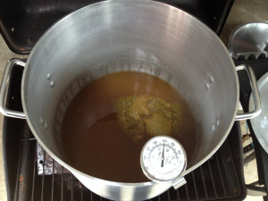
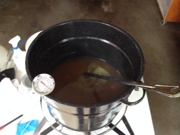
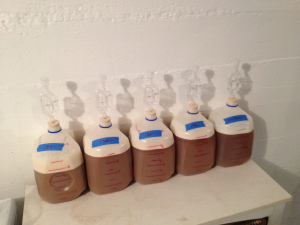
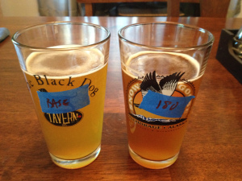
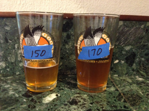

Abstract
One reason I started brewing was to be able to drink a beer I really, really like. Something that's just the way I want it to be. And to me (and many others) that means lots of hops flavor and aroma in an IPA. This experiment tried to determine the best temperature of a 60-minute hop stand in order to maximize flavor.
The main result was that a 60-minute hop stand with a temperature of 170°F (76.7°C) tasted the best (out of a set of temperatures ranging from 150°F to 180°F (65.6°C to 82.2°C)). However, none of the hop stands had the increase in hop flavor that I was expecting; instead, the hop-stand beers had fuller-bodied flavor.
A follow-up experiment (Hop Stand Experiment #2) looks at the causes of flavor and body in a hop stand. Still another follow-up experiment looks at other techniques that might actually increase hop flavor. I've come to the conclusion that 60 minutes is too long of a steep time to get any hop flavor; shorter times (e.g. 10 minutes) are much more effective. I've created a summary blog post that describes the techniques I've found to be useful at maximizing hop flavor and aroma.
Introduction
One technique for maximizing hop flavor and aroma is the "hop stand", where the hops sit for an extended period (up to 80 minutes) at below-boiling temperatures. (One question is whether the hops should be added at flameout or after the target temperature has been reached. I decided in this experiment to add the hops only once the target temperature had been reached.) I was intrigued by an article by Van Havig (now Master Brewer at Gigantic), "Maximizing Hop Aroma and Flavor Through Process Variables", in which the beer with the most flavor and aroma was the result of both a hop stand for 80 minutes and dry hopping. I tried a 5-gallon (19 liter) batch with 2½ oz (71 g) in a 180°F (82.2°C) hop stand, and I thought the results were quite successful. But I couldn't find sufficient information on what temperature the hop stand should be conducted at. In a large brewery, I believe that the temperature will very slowly decrease after flameout until the wort passes through the wort chiller, but with small-scale homebrewing we should be able to easily and quickly cool to the "best" temperature, maintain that temperature for the full time period, and then cool to pitching temperature. Whatever "best" is, which is what this experiment tried to find out. Lee Morgan at Hot Water Magic conducted an experiment, but at only two temperatures: 200°F (93.3°C) and 175°F (79.4°C). Since his results showed a clear preference for the hop stand at 175°F (79.4°C), I wanted to try a number of different temperatures all below 200°F (93.3°C).
Related Work
Here are some interesting hop-stand descriptions from around the web:
Methods
The methods of this experiment were simple: Create four 1-gallon (4-liter) batches at different hop-stand temperatures (with a 60-minute stand in each case), and another 1-gallon batch with no hop stand, which I called the "control" or "baseline". See which batch among the first four yields the most flavor, through a series of pairwise comparisons. See how much effect the hop stand is having, relative to the control, again with pairwise comparisons.
Because I restricted myself to four hop-stand batches and one control batch, that limited the temperature range I could try. I decided to go with 150°F, 160°F, 170°F, and 180°F (65.6°C, 71.1°C, 76.7°C, and 82.2°C). All batches were made from the same 1.065 OG wort and 2¼ oz (64 g) of Centennial hops added at 30 minutes, so the only (intentional) difference between batches was in the hop-stand temperature. No crystal malt, no late hopping, and no dry hopping, to keep the focus on the effects of the hop stand. I used ¼ oz of Cascade and ¼ oz of Citra (7 g of each) in each of the four 1-gallon batches, which would translate to 2½ oz in a 5-gallon batch (71 g in 19 liters).
Some might worry about the risk of infection with steeping for a long time at below-boiling temperatures. Dave Miller, in The Complete Handbook of Home Brewing, says that "most of the bacteria that are classified as wort spoilers grow best at temperatures from 80°F to 120°F" (27°C to 49°C) (p. 148). According to the Thermoworks food temperature FAQ, "Bacteria thrive between the temperatures of 40°F (4.5°C) and 140°F (60°C). Food should not be stored between these temperatures for extended periods of time." The minimum temperature used here was above 140°F (60°C), and none of the batches I've used with a hop stand (this experiment plus several other batches) have shown any signs of an infection. In short, I think it is never unreasonable to worry about infection, but for a hop stand the risk is negligible.
Recipe
For each 1-gallon (4 liter) batch, the following ingredients were used:
| Amount | Ingredient | Notes |
| 1.9 lbs (0.86 kg) | Briess Light LME | to yield target OG of 1.065. This was actually 9½ lbs (4.3 kg) in what eventually became one 5-gallon (20-liter) batch, which was then divided into 5 one-gallon (4-liter) batches. |
| 0.45 oz (12.75 g) | Centennial 10.9% AA | added at 30 min. to yield 77 IBU according to the Tinseth equation. This was actually 2¼ oz (64 g) of Centennial in the full 5-gallon (20-liter) batch. |
| ¼ oz (7 g) | Cascade | added when wort reached target hop-stand temperature |
| ¼ oz (7 g) | Citra | added when wort reached target hop-stand temperature |
| 0.092 oz (2.6 g) | Safale US-05 dry yeast | age 8 months, yielding ~0.75 million cells per ml and °P. This was actually 13 grams divided into 5 equal parts. Fix & Fix (An Analysis of Brewing Techniques, p. 68) recommend 0.75M cells per ml and °P. |
| 0.48 oz (14 g) | sucrose | to yield 2.2 volumes CO2. This was actually 2.40 oz (68 g), divided into 5 equal parts. |
Procedure
Preparing the Batches
The 9½ lbs (4.3 kg) of LME was added to 5¾ G (22 liters) of water, yielding 6½ G (25 liters) of 1.053 wort. At the end of the 30-minute boil, 5¾ G (22 liters) of wort remained. (I used a more vigorous boil than in my "numbers" post.) The Centennial hops were removed. This wort was divided into 5 equal batches. One batch was set aside, covered, as the control batch. Since I had two burners available, I did the 160°F (71.1°C) and 180°F (82.2°C) hop stands simultaneously (uncovered), then cooled them to pitching temperature. I then did the 150°F (65.6°C) and 170°F (76.7°C) hop stands simultaneously (uncovered), and cooled them and the control batch to pitching temperature. Each batch was transferred immediately after cooling to a 1-gallon (4-liter) container, with 0.70 to 0.87 G (2.6 to 3.3 liters) of wort remaining after separation from the break. The 13 grams of yeast were prepared in ½ cup (120 ml) of 80°F (26.7°C) water for 15 minutes, and this volume of slurry was equally divided amongst all five batches. I shook each batch vigorously to aerate. Airlocks were applied. Time passed. When bottling after 3 weeks with 2.40 oz (68 g) of sucrose divided amongst the five batches, I labeled each bottle with its hop-stand temperature. Yield was 6 to 7 bottles per condition.
The hop stands were kept as close as possible to the target temperature using low heat. Each was cooled initially to the target temperature using an immersion wort chiller, and then put on low heat to maintain the temperature. For the most part, the target temperature was maintained to within a few degrees.
The measured OG of the 160°F (71.1°C) and 180°F (82.2°C) batches was 1.066. The measured OG of the 150°F (65.6°C) and 170°F (76.7°C) batches was 1.065. I forgot to measure the OG of the control batch, which in hindsight was unfortunate, since it had the least evaporation (due to covering) and hence lowest OG. The measured final gravities (FG) of the batches were: 1.012, 1.014, 1.014, 1.013, and 1.015 for the control, 150°F, 160°F, 170°F, and 180°F batches, respectively. According to the Tinseth formula, there should be 77 IBUs in this beer, for a BU:OG ratio of 1.18.
Comparing the Batches
Over the period of about one month (beginning two weeks after bottling), I did a series of 15 pairwise comparisons of different batches. The question in each case was the same: which tastes better? Of course, I also kept notes about the flavors and qualities of each batch. With the number of possible combinations being very large and the number of bottles much smaller, I used the following procedure to select comparisons. First, the control was compared against 180°F (maximum expected difference), 150°F against 180°F (maximum hop-stand difference), 150°F against 160°F (minimum difference), 160°F against 170°F (minimum difference), and 170°F against 180°F (minimum difference). The remaining 10 tests were determined sequentially, based on the results up until that point and what comparison at that point would provide the most cumulative information about optimal temperature. (I'll convert to Celsius one more time, and then refer to the conditions by Fahrenheit only: 150°F = 65.6°C, 160°F = 71.1°C, 170°F = 76.7°C, 180°F = 82.2°C.)
I did the taste comparisons knowing which batch was in each glass. At times I tried a semi-blind tasting (shuffling the glasses around behind cover and waiting until I forgot which was which); these tastings generally confirmed my other, much easier, tests.
Pretty Pictures
Here are some pictures of the one-gallon batches.
 This is the 160°F hop stand, with hops in a mesh bag.
 This is the 180°F hop stand.
 Here are the resulting five one-gallon batches, just after applying the airlocks. Like a police lineup... except they're all guilty!
 The difficult job of performing a pairwise taste comparison. Note the color difference, which was much less pronounced when fermentation began. The control was the lightest, 180°F was the darkest.
 150°F was lighter than 170°F, although I had to improve my methods and take this picture against a non-brown background, in order to make the color difference more apparent.
Results
The table below shows the results of the 15 comparisons. Each row and column indicate a pairwise comparison. The value in each cell indicates which of the two temperatures tasted better. Multiple values indicate multiple comparisons at those two temperatures, which I did to detect possible random variation.
| Control | 150 | 160 | 170 | 180 | |
| Control | - | 150 | 160 | 180 | |
| 150 | - | 160 | 170, 170 | 180, 180 | |
| 160 | - | 170, 170, 170 | 180 | ||
| 170 | - | 170, 170 | |||
| 180 | - |
If these were all the results I obtained, then we'd be done and there'd be no need for a follow-up experiment. However, I was surprised at what the beers tasted like. Prior to running this experiment, I was expecting the hop-stand beers to have a more citrusy flavor than the control, due to the Cascade and Citra hops, but for them to have the same level of bitterness due to the below-boiling temperatures. I expected the flavor difference between the control and the hop-stand batches to be large, and for there to be smaller differences between the different target temperatures. I also was expecting the color of the beers to be more or less the same, with the hop stands possibly darker than the control. What I found instead was that the control was more "dry", "light", and "thin/fragile", and that the hop-stand batches were somehow "sweeter", more "full", and somehow more "rounded/robust" with more body. The different target temperatures had different levels of this dry/light or sweet/full character, with the 170°F batch having the most of the "full" character. While I wasn't expecting the addition of hops to make the beer more bitter, I really wasn't expecting the addition of hops to make the beer seem somehow sweeter. And the "full", "smooth" taste was not quite the citrus taste I was expecting. It's almost as if the addition of hops had the same effect as the addition of more malt. I found the fuller, somehow sweeter flavor more pleasant, and therefore I rated it higher. (Perhaps I should just skip the hop stand and increase my malt levels!) The color did increase more than expected with the hop-stand beers, and darkness correlated with temperature.
While the control batch did have the lowest final gravity (1.012) and the 180°F batch had the highest final gravity (1.015), there wasn't a linear relationship between temperature and final gravity (possibly due to variance in my FG measurements). If the sweeter taste were due to a higher final gravity, then the 170°F batch (FG of 1.013) should have been rated worse than all batches other than the control. It seems that the measured final gravity did not correlate well with perceived taste. My guess is that my FG measurements are accurate to about ±0.001 (I should be so lucky... reading a hydrometer can seem like an imprecise art form), and that the actual FG of the hop-stand batches was 1.014 across the board. The control batch may have had a slightly lower FG (for unknown reasons), or my FG measurement error might be closer to ±0.002.
Conclusion and Future Work
The use of a hop stand was found to be beneficial, relative to the batch without any hop stand. The hop-stand temperature that yielded the best flavor was 170°F (76.7°C).
Why did the use of a hop stand result in a fuller-bodied beer? I can think of a number of possible causes, which need to be have been tested in Experiment #2. In no particular order, here are some possibilities:
Navigate to:
AlchemyOverlord home page